Making Project Work Better with R
Getting started
Licensing
This work is licensed under a Creative Commons Attribution-ShareAlike 4.0 International License (CC BY-SA4.0).
Part 1: Original sides were authored by Shannon Pileggi, some added or altered by Max Kuhn
Part 2: Max Kuhn largely created these
Part 3: Created from E. David Aja’s previous work
Other authors are identified on a slide-by-slide basis.
None of this would exist without vision (and patience) of Jennifer Bryan
Checklist
R installed? Pretty recent?
Recommended R ≥ 4.4.1 (4.5.0 has 🐧 though)
RStudio installed?
Packages?
Resources
Book: What They Forgot to Teach You About R
Book: Happy Git and GitHub for the useR
Website: Tidyteam code review principles
What Did They Forget
to Teach You?
Syntax aside: tildes
In a character string, what does "~" indicate?
The home directory on your computer.
For example, on my mac, it is /Users/max
On windows it is the user’s home directory.
Probably at:
C:\Users\username- but really it is wherever
%UserProfile%points to
You should never use absolute paths but, if you do, make them platform agnostic using the tilde.
Syntax aside: pipes
2014+ magrittr pipe
%>%2021+ (R \(\geq\) 4.1.0) native R pipe
|>
2022 Isabella Velásquez Understanding the native R pipe |> https://ivelasq.rbind.io/blog/understanding-the-r-pipe/
Syntax aside: namespacing
dplyr::select()
tells R explicitly to use the function
selectfrom the packagedplyrcan help to avoid name conflicts (e.g.,
MASS::select())does not require
library(dplyr)
Syntax aside: Rmd/qmd chunk options
We’ve probably all be used to a knitr computing chunk that looks like this:
Part 1: Organized Projects
Be organized as you go,
not “tomorrow”
Don’t fret over past mistakes.
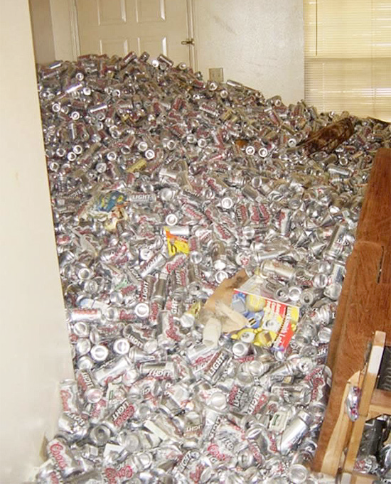
Raise the bar for new work.
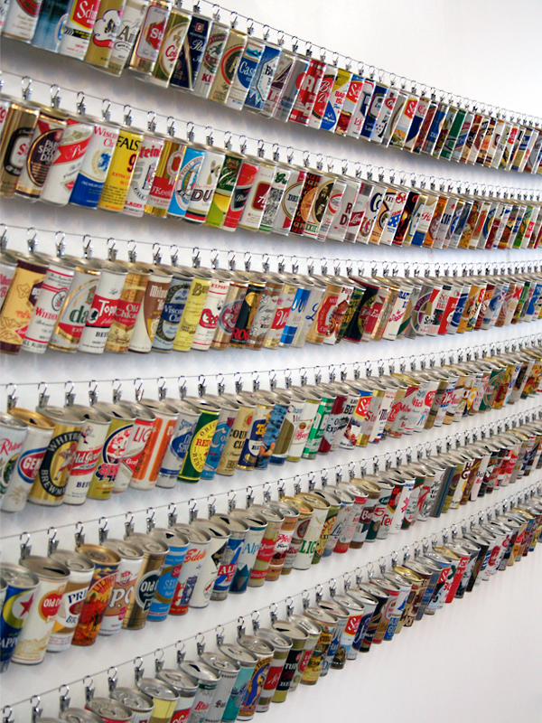
Be organized
self-explaining >>> wordy, needy explainers
Be organized
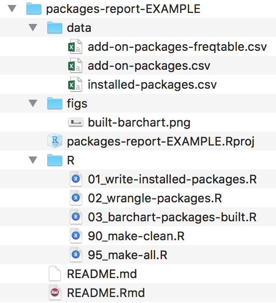
>>>
file salad
+ an out of date README
Good enough practices in scientific computing
PLOS Computational Biology
Wilson, Bryan, Cranston, Kitzes, Nederbragt, Teal (2017)
Practical Example:
Predictors of reproductive toxicity
Original GH repo for publication (circa 2012):
https://github.com/topepo/steroidogenic_tox
Refactored to look like a modern data analysis project:
Normally, I would put the Quarto report/summary in a reports directory but using index.qmd I get a free website out of it.
Project-oriented workflows
Adopt a project-oriented workflow
Why
work on more than 1 thing at a time
the things are fairly similar
collaborate, communicate, distribute
start and stop
How
dedicated directory
have a template to follow
RStudio Project
Git repo, probably syncing to a remote
If the top of your script is
…

Which persist after rm(list = ls())?
| Option | Persists? |
|---|---|
| A. library(dplyr) | |
| B. summary <- head | |
| C. options(stringsAsFactors = FALSE) | |
| D. Sys.setenv(LANGUAGE = “fr”) | |
| E. x <- 1:5 | |
| F. attach(iris) |
02:00
Which persist after rm(list = ls())?
| Option | Persists? |
|---|---|
| A. library(dplyr) | |
| B. summary <- head | |
| C. options(stringsAsFactors = FALSE) | |
| D. Sys.setenv(LANGUAGE = “fr”) | |
| E. x <- 1:5 | |
| F. attach(iris) |
What does it mean to be an RStudio Project?
RStudio leaves notes to itself in foo.Rproj
Open Project = dedicated instance of RStudio
dedicated R process
file browser pointed at Project directory
working directory set to Project directory
Many projects open
Use a “blank slate”
OR
Tools -> Global Options
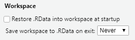Get (git) vaccinated!!!
Restart R often
Session -> Restart R
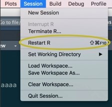
Windows
- Ctrl + Shift + F10
Mac
Cmd + Shift + 0
Cmd + Shift + F10
Project initiation: the local case
- New folder + make it an RStudio Project
usethis::create_project("~/i_am_new")File -> New Project -> New Directory -> New Project
- Make existing folder into an RStudio Project
usethis::create_project("~/i_exist")File -> New Project -> Existing Directory
Try option 1 now.
02:00
Safe paths
On reproducibility of code
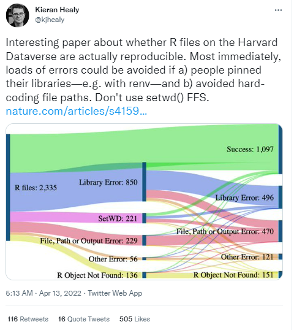
A large-scale study on research code quality and execution.
Trisovic, A., Lau, M.K., Pasquier, T. et al.
Sci Data 9, 60 (2022).
Do you know where
your files are?
Practice “safe paths”
relative to a stable base
use file system functions
not paste(), strsplit(), etc.
Packages with file system functions
fs = file path handling
Examples of a stable base
Project directory
Automatically complete paths with Tab.
Absolute paths
I have nothing against absolute paths.
Some of my best friends are absolute paths!
But don’t hard-wire them into your scripts.
Instead, form at runtime relative to a stable base
Practice safe paths

Use the
herepackage to build paths inside a project.Leave working directory at top-level at all times, during development.
Absolute paths are formed at runtime.
Artwork by @allison_horst.
here example
Works on my machine, works on yours!
Works even if working directory is in a sub-folder.
Works for RStudio Projects, Git repos, R packages, etc.
Works with knitr / rmarkdown.
here::here()
The here package is designed to work inside a project, where that could mean:
RStudio Project
Git repo
R package
Folder with a file named .here
here::here() does not create directories; that’s your job.
Kinds of paths
Absolute path.
Relative path to working directory, established by the RStudio Project.
Relative path within the RStudio Project directory.
What if my data can’t live in my project directory?
Are you sure it can’t?
Review the Good Enough Practices paper for tips.
Create a symbolic link to access the data. (fs::link_create(), fs::link_path())
Put the data in an R package.
Use pins.
Explore other data warehousing options.
RStudio Community threads:
Names matter
’Tis but thy name that is my enemy;
Thou art thyself, though not a Montague.
What’s Montague? It is nor hand, nor foot,
Nor arm, nor face, nor any other part
Belonging to a man. O, be some other name!
What’s in a name? That which we call a rose
By any other name would smell as sweet;
So Romeo would, were he not Romeo call’d,
Retain that dear perfection which he owes
Without that title. Romeo, doff thy name;
And for thy name, which is no part of thee,
Take all myself.
This
is
not
true
for
file
names.
From Danielle Navarro’s Project Structure slides
Names matter
machine readable
human readable
sort nicely
optimized for tab-complete
What features differentiate 😔 vs 😍?
😔
😍
myabstract.docx
Joe’s Filenames Use Spaces and Punctuation.xlsx
figure 1.png
homework1.R
JW7d^(2sl@deletethisandyourcareerisoverWx2*.txt
2018-01_bryan-abstract-rstudio-conf.docx
joes-filenames-are-getting-better.xlsx
fig01_scatterplot-talk-length-vs-interest.png
bryan_hw01.R
1986-01-28_raw-data-from-challenger-o-rings.txt
01:00
Names machines like
- don’t leave white space
- use letters, numbers, hyphens and underscores… that’s it
(characters like ^.*?+|$ can have a special meaning)
- be consistent with case
(some operating systems treat a and A the same, some differently).
- use separator characters wisely
use underscore _ to separate different chunks
use hyphen - for words in the same chunk
This creates names that are regular expression and globbing friendly, and easy to compute on! 🎉
Adapted from
https://djnavarro.net/slides-project-structure/#1.
Names humans like
name contains info on content
name anticipates context
concept of a slug 🐌 from user-friendly URLs
1986-01-28_
raw-data-from-challenger-o-rings.txtconcise, meaningful description
usually appended to the end
Names that sort nicely
put something numeric in there
left pad with zeros for constant width, nice sorting, 01
use the ISO 8601 standard for dates, YYYY-MM-DD
order = chronological or … consider common sense
ISO 8601
👍 file names
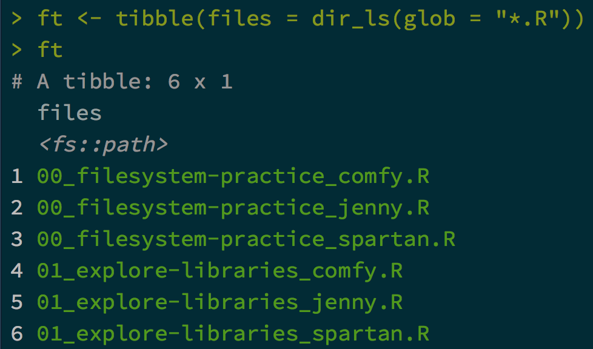Anyone can guess at file’s purpose
👍 file names
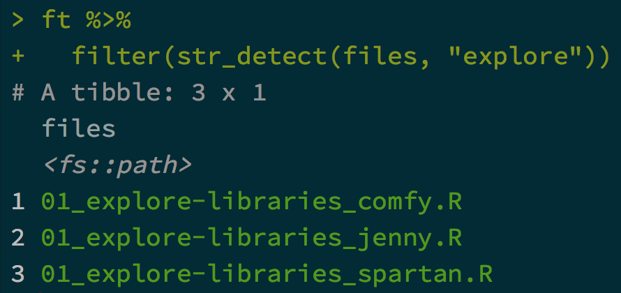Easy to filter in R (or the shell or whatever)
👍 file names
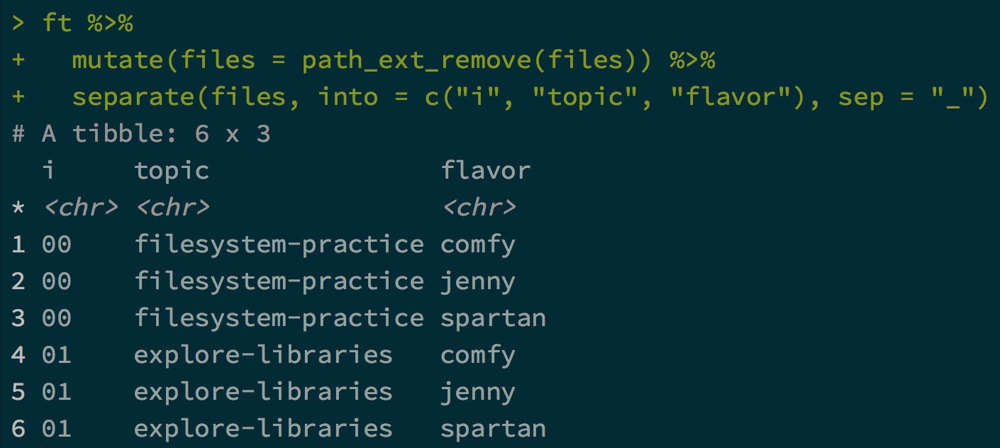Intentional delimiters means meta-data is easily recovered.
_ delimits fields; - delimits words
👍 file names
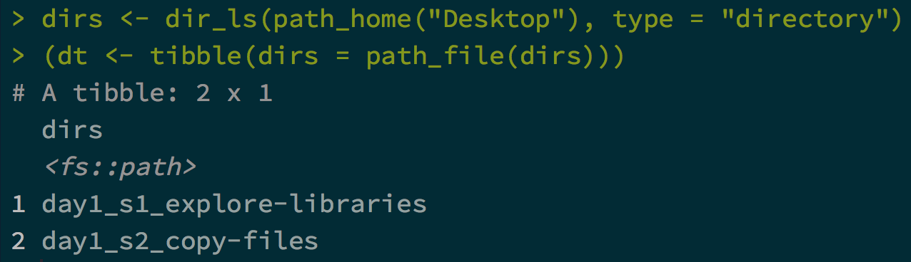Sorts in the same order as you
experience in real life.
Names matter
machine readable, human readable, and sort nicely
easy to implement NOW
payoffs accumulate as your skills evolve and
projects get more complex
Project structure
Break logic and output into pieces
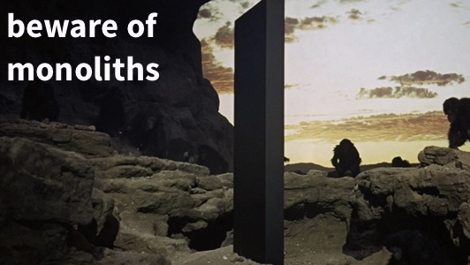Process
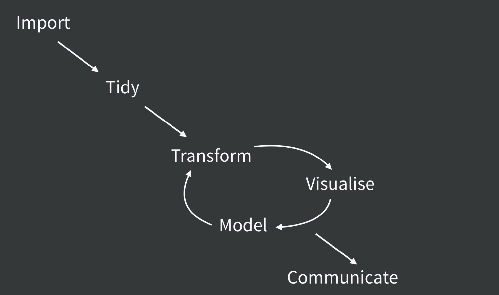Project code
smell.test.R
wrangle.R
model.R
make-figs.R
report.Rmd
>>>
everything.R
Process and code
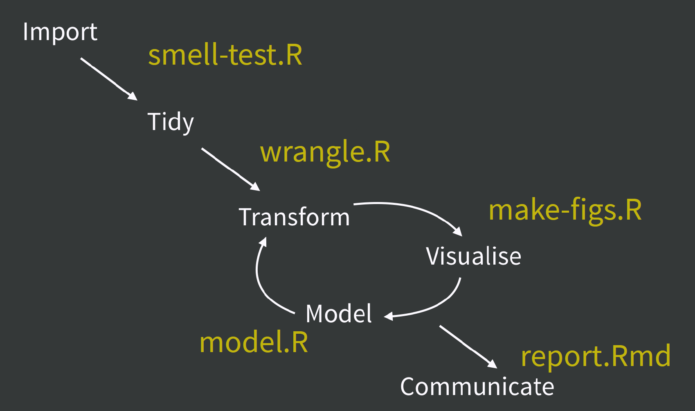Project artifacts
raw-data.xlsx
data.csv
fit.rds
ests.csv
>>>
.Rdata
Process and artifacts
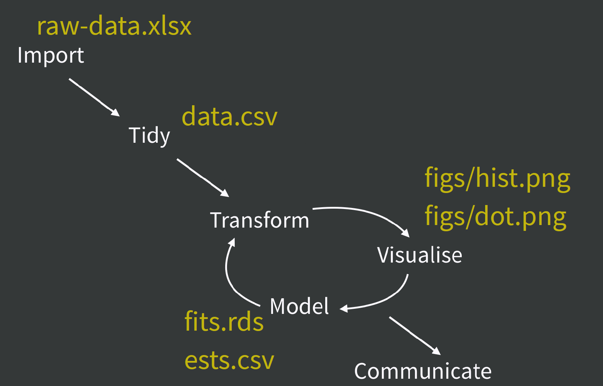A humane API for analysis
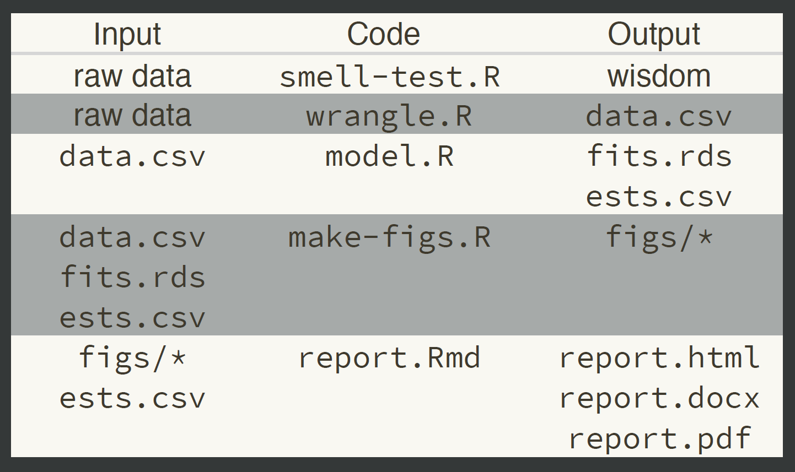Max’s Preference
raw_data: original source data (e.g., xls*, csv, images, etc)code: source files for import, preprocessing, analysis, summariesrdata: location for any {.RData,.rds,.rda} files that will be used laterreports: files and sub-directories created for dissemination ([Rq]mdfiles).exports: objects that are given to someone else (e.g., model object, shiny app)
Subjective but thought out.
Max’s Preference
A little bit on partial automation
If your project requires many computing iterations because:
- the project requires a lot of data transformations and
- the rows may change (in number or value)
then think about how you would automate some parts.
Using makefiles or the targets package could be a lifesaver.
You’ll want to make sure that the raw data and intermediary data are consistent with the results you give to your clients.
But you probably can’t automate interpretation.
Part 2: Resilient Reports
What’s your horror story?
So many of my projects went through different rounds of adding and removing rows of data.
The cascading effect wreaks havoc on reports, tables, and interpretation.
Someone tell their worst experience (or I will)
How can you avoid as much of this as possible?
Treat writing like coding
Write for the most general result.
Never hard-code a number
Think about the end result. What format will it be?
The lesson of most of this workshop is
Tooling doesn’t define you.
But it can catalyze your efficiency and effectiveness.
Tools, tools, tools
You might want to invest some time into good tools for reporting.
First, we’ll talk about writing text with the help of R packages (no AI involved).
Then tables.
And a little about figures.
cli and glue
These two packages have excellent features for writing text from data.
They do many of the same things and your preference may vary.
gluetends to be better for simple thingsclican do more, especially for writing output in your codeSites of interest:
Also, the epoxy package extends glue.
The cli package …
12 samples were available with groups: control, low dose, and high dose
… and friends
three groups: “Control”, “Low Dose”, or “High Dose”
Nice data conversions
The 1st and 2nd p-values were 0.020 and <0.001
😱 this workshop feels 20h 12m 50.4s long
Writing longer text
You can make a glue chunk as long as there is no line break or empty lines.
```{glue}
#| label: glue-it
#| results: asis
#| echo: false
Did I say that there were **{length(groups)} groups** and _{num_samples}_ samples?
```Did I say that there were 3 groups and 12 samples?
Writing longer text with epoxy
After loading epoxy you can make that type of chunk with line breaks and empty lines:
```{epoxy}
#| label: epoxy-ramble
#| echo: false
I was talking to by boss yesterday and he told me about priorities
{.and paste0("1", letters[1:3])}. I said {.emph "'You can't be serious!'"}.
Anyway the text in this chunk went to a new
line just to make a point.
<br>
{ji("point_up_2")} was an empty line and `<br>`!
```I was talking to by boss yesterday and he told me about priorities 1a, 1b, and 1c. I said ‘You can’t be serious!’. Anyway the text in this chunk went to a new line just to make a point.
👆 was an empty line and <br>!
Options for tables
You might want to keep a browser tab open with the Reproducible Research CRAN Task View.
The primary contenders are:
gt is very tidyverse
| species | bill_len | bill_dep | year |
|---|---|---|---|
| Adelie | 39.8 | 19.1 | 2007 |
| Adelie | 40.6 | 17.2 | 2009 |
| Adelie | 39.2 | 21.1 | 2007 |
| Gentoo | 49.1 | 14.5 | 2009 |
| Gentoo | 50.0 | 16.3 | 2007 |
| Gentoo | 47.7 | 15.0 | 2008 |
| Chinstrap | 58.0 | 17.8 | 2007 |
| Chinstrap | 51.7 | 20.3 | 2007 |
| Chinstrap | 50.5 | 19.6 | 2007 |
gt is very tidyverse
| species | length | depth | year |
|---|---|---|---|
| Adelie | 39.8 | 19.1 | 2007 |
| Adelie | 40.6 | 17.2 | 2009 |
| Adelie | 39.2 | 21.1 | 2007 |
| Gentoo | 49.1 | 14.5 | 2009 |
| Gentoo | 50.0 | 16.3 | 2007 |
| Gentoo | 47.7 | 15.0 | 2008 |
| Chinstrap | 58.0 | 17.8 | 2007 |
| Chinstrap | 51.7 | 20.3 | 2007 |
| Chinstrap | 50.5 | 19.6 | 2007 |
gt is very tidyverse
| species |
Bill
|
year | |
|---|---|---|---|
| length | depth | ||
| Adelie | 39.8 | 19.1 | 2007 |
| Adelie | 40.6 | 17.2 | 2009 |
| Adelie | 39.2 | 21.1 | 2007 |
| Gentoo | 49.1 | 14.5 | 2009 |
| Gentoo | 50.0 | 16.3 | 2007 |
| Gentoo | 47.7 | 15.0 | 2008 |
| Chinstrap | 58.0 | 17.8 | 2007 |
| Chinstrap | 51.7 | 20.3 | 2007 |
| Chinstrap | 50.5 | 19.6 | 2007 |
etcetera, etcetera
Cross-referencing in Quarto
Before:
In our report, we can use @tbl-some-penguins to produce Table 1.
gtsummary descriptive statistics
| Predictor | N | Adelie N = 1521 |
Chinstrap N = 681 |
Gentoo N = 1241 |
p-value |
|---|---|---|---|---|---|
| bill_len | 342 | 38.8 (36.7, 40.8) | 49.6 (46.3, 51.2) | 47.3 (45.3, 49.6) | |
| Unknown | 1 | 0 | 1 | ||
| bill_dep | 342 | 18.40 (17.50, 19.00) | 18.45 (17.50, 19.40) | 15.00 (14.20, 15.70) | |
| Unknown | 1 | 0 | 1 | ||
| island | 344 | ||||
| Biscoe | 44 (29%) | 0 (0%) | 124 (100%) | ||
| Dream | 56 (37%) | 68 (100%) | 0 (0%) | ||
| Torgersen | 52 (34%) | 0 (0%) | 0 (0%) | ||
| 1 Median (Q1, Q3); n (%) | |||||
gtsummary model summaries
gtExtras descriptive statistics + plot
vertical_penguins <-
penguins |>
select(-island, -species, -sex, -year) |>
pivot_longer(
everything(),
names_to = "Variable", values_to = "value"
) |>
summarize(
Mean = mean(value, na.rm = TRUE),
`Std. Dev` = sd(value, na.rm = TRUE),
Missing = mean(is.na(value)),
Distribution = list(value),
.by = c(Variable)
) | Variable | Mean | Std. Dev | Missing | Distribution |
|---|---|---|---|---|
| bill_len | 43.9 | 5.46 | 0.00581 | |
| bill_dep | 17.2 | 1.97 | 0.00581 | |
| flipper_len | 201 | 14.1 | 0.00581 | |
| body_mass | 4,200 | 802 | 0.00581 |
Add a gt_theme_dark():
| Variable | Mean | Std. Dev | Missing | Distribution |
|---|---|---|---|---|
| bill_len | 43.9 | 5.46 | 0.00581 | |
| bill_dep | 17.2 | 1.97 | 0.00581 | |
| flipper_len | 201 | 14.1 | 0.00581 | |
| body_mass | 4,200 | 802 | 0.00581 |
Figures
Like tables, Quarto has excellent cross-referencing
- use
label: fig-plotto reference@fig-plotlater
The two best resources about plots that I know:
Both by Thomas Lin Pedersen.
The first post shows how to scale your ggplot so that your points and text are not too large or small.
Part 3: Project Admin
➡️
the onion
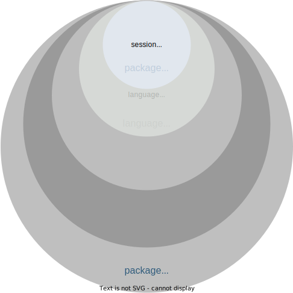
starting R
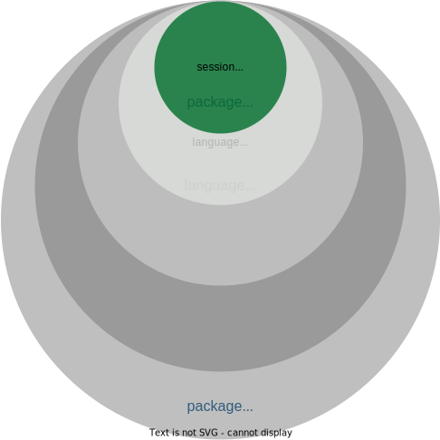
why?
Sometimes we want to change the way our code behaves without having to change the code.
R startup sequence

R startup sequence (our focus)

.Renviron
environment variables
a […] named value that can affect the way running processes will behave on a computer
what goes in .Renviron
✅ R-specific environment variables
✅ API keys or other secrets
❌ R code
Editing .Renviron
user
~/.Renviron
project
path/to/your/project/.Renviron
example .Renviron
read environment variables
Sys.getenv()
edit your user .Renviron
usethis::edit_r_environ()- add
WTF_USER=<your name>_user - restart your R session
CTRL + SHIFT + F10
CMD + SHIFT + 0 - Retrieve the value of WTF_USER
Sys.getenv("WTF_USER")
02:00
edit your project .Renviron
usethis::edit_r_environ("project")- add
WTF_PROJECT=<your name>_project - restart your R session
CTRL + SHIFT + F10
CMD + SHIFT + 0 - Retrieve the value of WTF_PROJECT
Sys.getenv("WTF_PROJECT")
02:00
what’s the value of WTF_USER after you set WTF_PROJECT?
.Renviron recap
project .Renviron “short-circuits” if it exists, your user .Renviron will not be evaluated
.Rprofile
R code that runs at the start of each session
?interactive()
TRUE
🧑💻
- sending individual lines of code to the console
☝️ most .Rprofile customization
FALSE
🤖
- knitting an RMarkdown document
R -e script.R
what to put in .Rprofile
- set a default CRAN mirror
- customize R prompt
what not to put in .Rprofile
If it matters for code you share, it should not be in .Rprofile
why shouldn’t these go in .Rprofile?
library(tidyverse)f <- dplyr::filtertheme_set(theme_bw())
discuss with your neighbor
Why might these be safe to put in .Rprofile?
02:00
dotfiles
https://github.com/search?q=.Rprofile
activity
usethis::edit_r_profile()- add
print("from my user Rprofile") - restart your R session
CTRL + SHIFT + F10
CMD + SHIFT + 0 - what value is printed when you restart?
usethis::edit_r_profile("project")- add
print("from my project Rprofile") - restart your R session
CTRL + SHIFT + F10
CMD + SHIFT + 0 - what value is printed when you restart?
05:00
.Rprofile recap
project .Rprofile “short-circuits”
if it exists, your user .Rprofile will not be evaluated
wrapping up
.Renviron
- secrets
- environment information
.Rprofile
- development dependencies
reproducible environments
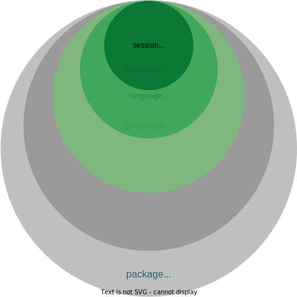
reproducibility strategies

tools
p3m
renv

p3m
p3m: latest
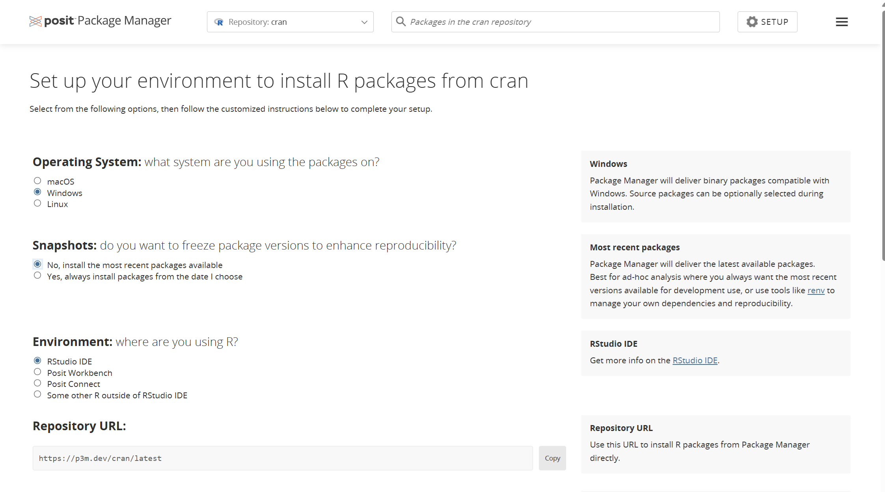p3m: date-based snapshots
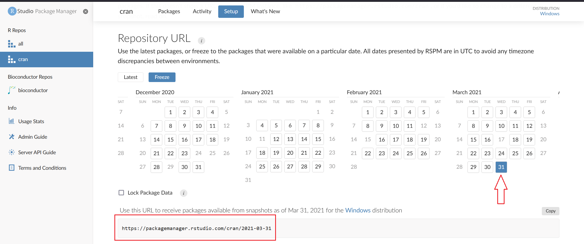activity
time travel!
open the
wtf-explore-librariesprojectrun
packageVersion("dplyr")update your project
.Rprofilewith a date-based snapshot of CRANRestart R
install.packages("dplyr")
what version of dplyr did you install?
05:00
⏪
remove the repository configuration from your project
.Rprofilerestart R
reinstall whatever version of dplyr you were using before, e.g.:
if that process seems silly, ✨ you should use renv ✨
renv
shared project environment
%%{init: {"theme": "dark", "look": "handDrawn" } }%%
graph
L --- P1
L --- P2
L --- P3
L(library)
P1(project1)
P2(project2)
P3(project3)
shared project environment
.libPaths()
isolated project environments
%%{init: {"theme": "dark", "look": "handDrawn" } }%%
graph
C --- L1
C --- L2
C --- L3
L1 --- P1
L2 --- P2
L3 --- P3
L1(library1)
L2(library2)
L3(library3)
P1(project1)
P2(project2)
P3(project3)
C(global cache)
isolated project environments
.libPaths()
isolated project environments
- experiment with new packages without breaking other projects
- share exactly which versions you’re using with your team or future you
- re-use packages you’ve already installed
activity
create an isolated project library
CMD|CTRL + SHIFT + P > Close Current Project
usethis::create_project("~/wtf-renv") # or wherever you typically put projects
install.packages("renv")
renv::init()
renv::status()03:00
activity
manage dependencies
add library(parallelly) to any file in the wtf-renv/R directory
remove library(parallelly) from the file you added it to
05:00
renv::install()
or install.packages() with shims enabled
renv::install("jsonlite")
renv::install("jsonlite@1.2") # at version
renv::install("jeroen/jsonlite") # latest
renv::install"jeroen/jsonlite@80854359976250f30a86a6992c0d8c3b3d95473d") # at SHA
renv::install("path/to/package") # local sourcethe junk drawer
for reprexes, tweets, and other ephemera:
~/Documents/scratch